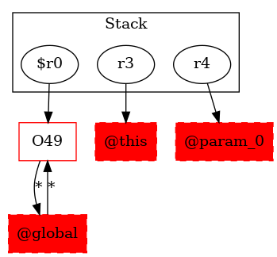

-1 : r3 := @this: Test5
-1 : r4 := @parameter0: java.lang.String[]
49 : $r0 = new testcase.Test5DerivedClass
49 : specialinvoke $r0.|testcase.Test5DerivedClass: void |init|()|()
50 : virtualinvoke $r0.|testcase.Test5DerivedClass: void test5_1()|()
51 : virtualinvoke $r0.|testcase.Test5DerivedClass: testcase.Test5 test5_2(boolean)|(0)
52 : virtualinvoke $r0.|testcase.Test5DerivedClass: void test5_3()|()
53 : return -> class soot.jimple.internal.JReturnVoidStmt
